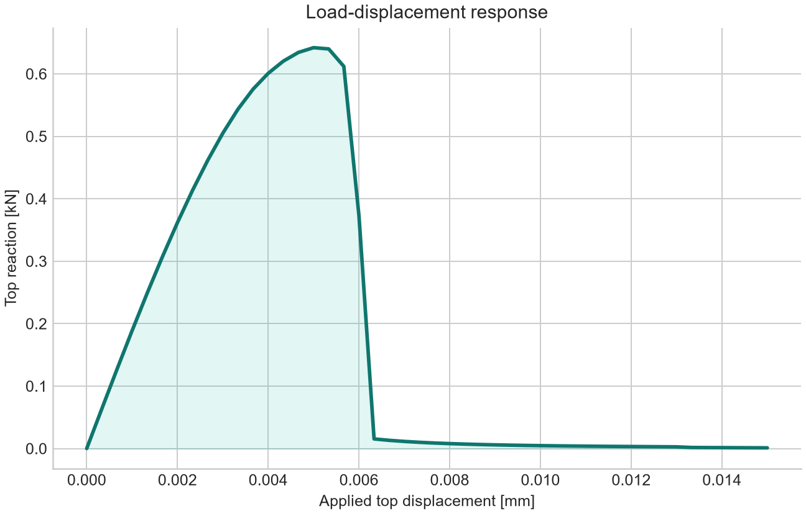
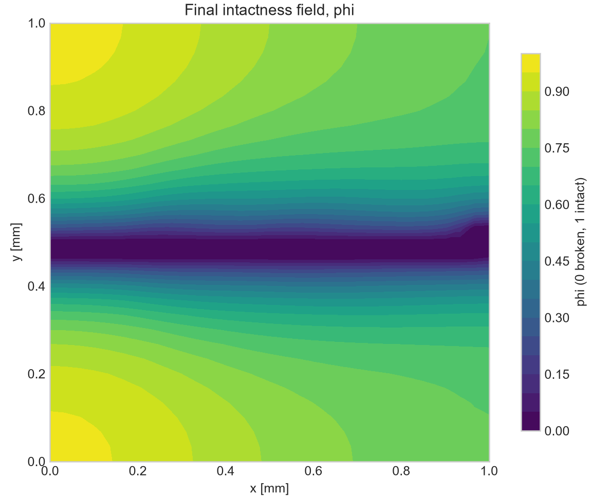

Physics
Small-strain isotropic elasticity with uniform, analytic-gradient, or region-overridden coefficients; a smoothed spectral split; normalized stiffness degradation; AT2 fracture energy; and maximum-tensile-energy history.
Model · solver · reproducibility
Governing equations, finite-element discretization, transactional staggered solution, mixed-mode boundary schemes, spatial material coefficients, strict line-oriented input files, and verified output for a single-edge-notched benchmark.
01 · Implementation
The program solves quasi-static brittle fracture in a two-dimensional isotropic solid. A displacement field describes deformation and a scalar intactness field regularizes a crack over a finite length scale. Tensile elastic energy drives fracture; compressive elastic energy remains undegraded. Accepted load states satisfy mechanical equilibrium, a bound-constrained phase subproblem, irreversibility, and coupled residual criteria.
Small-strain isotropic elasticity with uniform, analytic-gradient, or region-overridden coefficients; a smoothed spectral split; normalized stiffness degradation; AT2 fracture energy; and maximum-tensile-energy history.
CG1 displacement and phase fields, DG0 history, consistent-tangent Newton mechanics, KKT-checked phase minimization, staggered coupling, rollback, and load cutback.
Configuration and material provenance, accepted-state CSV, atomic status summary, vector reactions, force balance, crack-path and energy diagnostics, XDMF/HDF5 fields, PNG plots, and explicit failure reporting.
02 · Mathematical model
Let Ω = [0,W] × [0,H] be the specimen. The primary unknowns are displacement u: Ω → ℝ² and intactness φ: Ω → [0,1]. The history H stores the largest tensile-energy density reached by an accepted load state.
Here p is E, ν, Gc, or ℓ. Ordinary material keywords give
the left/bottom values; their *_end partners give the
right/top values. File mode also supports constant, linear, affine,
box-region, and circular-region definitions.
For the symmetric 2 × 2 strain tensor, the implementation evaluates the two principal strains analytically. A small smoothing η makes the spectral residual differentiable at zero strain and repeated eigenvalues.
Default smoothing: η = 10−10.
This is a physical snapshot based on the current strain. It is distinct from the history-driven quadratic potential used inside the phase solve.
The consistent Newton tangent is Ju = ∂Ru/∂u, generated by UFL differentiation. For graded materials, σ uses the local DG0 Lamé coefficients on each cell.
When material data vary, Gc(x) and ℓ(x) are retained inside every integral; they are not replaced by domain averages.
The clipped unconstrained solution is only an initial candidate. When its projected gradient exceeds tolerance, L-BFGS-B solves the box-constrained quadratic. Acceptance requires the projected KKT residual to pass.
With r = Aφ−b: r = 0 at free interior degrees of freedom, r ≥ 0 at a lower bound, and r ≤ 0 at an upper bound. Fixed notch degrees of freedom are excluded from the projected residual.
Where no phase value is imposed, integration by parts gives the no-flux condition (Gcℓ∇φ)·n = 0. Because Gcℓ is positive, this is equivalent to ∇φ·n = 0. The internal starter-notch nodes remain fixed at φ = 0.
The code sums owned entries of the assembled mechanical residual before essential-condition elimination; the PETSc backend then applies an MPI reduction. Top-plus-bottom sums are reported as force-balance checks.
The reported crack front is the largest x-coordinate in the mesh-connected component of nodes satisfying φ ≤ 0.2 and attached to the starter notch. Crack extension is max(0, xfront−a0). Connectivity prevents isolated damaged islands from being counted as the main crack. Mixed-mode output additionally records the connected tip coordinates, graph path length, kink angle, and connected-node count.
03 · Finite elements
| Field | Space | Storage and role |
|---|---|---|
| Displacement u | [CG1]² | Continuous vector-valued linear Lagrange basis on triangles |
| Intactness φ | CG1 | Continuous scalar linear Lagrange basis; nodal bounds enforce no healing |
| History H | DG0 | One discontinuous constant value per triangle |
| E, ν, Gc, ℓ | DG0 | Static cellwise material coefficients; constant in uniform mode |
A structured W × H rectangle is divided into nx × ny rectangles and split into 2nxny right triangles.
The actual largest triangle edge is h = √[(W/nx)²+(H/ny)²]. Strict mode requires h/minΩℓ ≤ 0.5, equivalent to the cellwise rule on this uniform structured mesh.
CG1 displacement gives cellwise-constant strain on affine triangles, so ψ+ and H are represented once per cell by DG0.
DOLFINx creates the mesh and spaces, FFCx compiles the UFL forms, and DOLFINx
assembles native sparse matrices and vectors. On native Windows, matrices are
converted to SciPy CSR and solved with scipy.sparse.linalg.spsolve.
Vector-space BSR matrices are explicitly converted to CSR. A singular,
rank-deficient, nonfinite, or nonconvergent solve becomes a clear runtime
failure that can trigger load rollback.
This backend requires exactly one MPI rank. The finite-element formulation is independent of that deployment choice, but the included SciPy solve is not a parallel PETSc implementation.
For institute clusters, use the separate Linux PETSc/MPI backend. It uses distributed DOLFINx meshes, PETSc SNES/SNESVI, collective XDMF/HDF5, and supplied launch templates for genuine 16- or 32-rank jobs.
04 · Boundary-value problem
The default configuration is a unit-square specimen with a horizontal internal starter notch and displacement-controlled vertical tension.
| Default setting | Value |
|---|---|
| Width × height | 1.00 × 1.00 mm |
| Starter notch | 0.20 mm at y = 0.50 mm |
| Mesh | 100 × 100 rectangles; 20,000 triangles |
| Young modulus E | 210 kN/mm² |
| Poisson ratio ν | 0.30 |
| Fracture toughness Gc | 2.7 × 10−3 kN/mm |
| Length scale ℓ | 0.030 mm |
| Residual stiffness | 1 × 10−8 |
| Kinematic assumption | Plane strain |
| Top displacement | 0 → 0.015 mm |
| Nominal increments | 60 |
| Maximum staggered iterations | 250 per attempted load |
The mesh validator requires even ny and integer
notch_length / (width / nx), so the notch lies exactly on
mesh vertices.
Let Δ(t) = t(Us,Uo), where
Uo is max_displacement and Us is the
signed max_sliding_displacement. All schemes use the same
pseudo-time, so a load cutback scales opening and sliding together and
preserves their prescribed ratio.
| mechanical_bc_scheme | Bottom edge | Top edge | Use |
|---|---|---|---|
legacy_roller_pin | uy=0; lower-left ux=0 | uy=tUo; ux free | Exact backward-compatible mode-I benchmark. Us must be zero. |
relative_clamped | u=(0,0) | u=Δ(t) | Full relative opening/sliding motion is placed on the top edge. |
symmetric_clamped | u=−Δ(t)/2 | u=+Δ(t)/2 | The same relative motion is centered about zero. |
mechanical_bc_scheme relative_clamped
max_displacement 5.0e-4
max_sliding_displacement 2.5e-4
Run the checked example with
python phasefield_crack.py -in inputs/mixed_mode.in.
The imposed ratio Us/Uo is a boundary-kinematics
ratio, not KII/KI; geometry, finite boundaries,
elastic gradients, and crack evolution determine the near-tip mixity.
05 · Nonlinear solution
During an attempted load, the last accepted un, φn, and Hn remain immutable. A trial becomes physical history only after every convergence gate passes.
Check geometry, boundary scheme, material mode, pointwise material ranges, mesh alignment, local h/ℓ, tolerances, and output controls. Create mesh, DG0 material coefficients, adjacency, function spaces, boundary conditions, UFL forms, and the run manifest.
Set u = 0, φ = 1, and H = 0; set notch nodes to φ = 0; then solve the constrained phase problem once at zero load to equilibrate the regularized notch profile.
Begin with nominal Δt = 1/N and ttrial = min(1,tn+Δt). Snapshot u, φ, H, and active-bound visit counters before applying both opening and sliding values for the selected boundary scheme.
At fixed φ, assemble the nonlinear mechanical residual and consistent tangent. Apply lifted essential conditions, solve a sparse Newton update, update u, and require free residual, increment, and boundary-violation limits.
Interpolate ψ+(u) into DG0 and assign H = max(Hn,ψ+). Rebuilding from Hn prevents inner solver iterates from becoming fictitious load history.
Assemble A(H)φ = b with local Gc and ℓ coefficients, solve the unconstrained system for a starting candidate, apply bounds 0 ≤ φ ≤ φn, and run L-BFGS-B when the projected KKT residual requires it.
Reassemble the mechanical residual after the phase update. Accept the staggered iterate only when phase increment ≤ 10−5, phase KKT residual ≤ 10−8, and free mechanical residual ≤ 10−6.
Append one CSV row with opening/sliding values, vector reactions, force balance, and crack-path diagnostics; optionally write XDMF fields; reset the consecutive-cutback count; and advance accepted pseudo-time. Only committed states appear in output histories.
If Newton, phase optimization, or staggered convergence fails, restore every snapshot, multiply Δt by 0.5, and retry from the same accepted state. Opening and sliding remain proportional to the retried pseudo-time.
Close field files, rewrite the accepted-state CSV, generate plots, and atomically replace summary.json with completed status. Post-processing errors are also captured as failed status.
06 · Line-oriented configuration
An input file is a readable sequence of keyword–value commands. Every
SimulationConfig field is available, so complete studies do not
require editing Python. Parsing is deliberately strict and fails before an
expensive finite-element solve.
# are ignored.# begins an inline comment.# with single or double quotes.true/false, yes/no, on/off, or 1/0, case-insensitively.run keyword; invoking the Python command parses, validates, and runs the simulation.# Geometry and mesh
width 1.0
height 1.0
notch_length 0.20
nx 40
ny 40
# Material and model
young_modulus 210.0
young_modulus_end 210.0
poisson_ratio 0.30
poisson_ratio_end 0.30
fracture_toughness 2.7e-3
fracture_toughness_end 2.7e-3
length_scale 0.080
length_scale_end 0.080
material_mode uniform
material_file none
residual_stiffness 1.0e-8
plane_stress false
# Load and output
mechanical_bc_scheme legacy_roller_pin
max_displacement 0.015
max_sliding_displacement 0.0
load_steps 60
output_directory "results/case 01"
write_xdmf true
write_material_fields true
make_plots true
verbose true
Omitted keywords retain their base values. The checked example
inputs/notched_tension.in lists
all 42 keywords and is validated by the automated tests.
Input-file paths and relative output directories are resolved from the
process working directory. A relative material_file read from
the main input is instead anchored at that input's directory, so a case
and its material description remain portable together. An explicit relative
--material-file override is resolved from the working directory.
| Keyword | Type / unit | Default | Meaning and validation |
|---|---|---|---|
| width | float · mm | 1.0 | Specimen width; must be positive. |
| height | float · mm | 1.0 | Specimen height; must be positive. |
| notch_length | float · mm | 0.20 | Starter-notch length; strictly between zero and width and aligned with x-mesh vertices. |
| nx | integer · divisions | 100 | Rectangle divisions in x; at least 2 and compatible with notch alignment. |
| ny | integer · divisions | 100 | Rectangle divisions in y; at least 2 and even so y = height/2 contains vertices. |
| young_modulus | float · kN/mm² | 210.0 | E; must be positive. |
| poisson_ratio | float · — | 0.30 | ν; admissible range −0.99 < ν < 0.5. |
| fracture_toughness | float · kN/mm | 2.7e-3 | Gc; must be positive. |
| length_scale | float · mm | 0.030 | AT2 regularization length ℓ; must be positive and resolved by the mesh in strict mode. |
| young_modulus_end | float · kN/mm² | 210.0 | E at x=W or y=H in a linear material mode; positive. |
| poisson_ratio_end | float · — | 0.30 | ν at x=W or y=H; −0.99 < ν < 0.5. |
| fracture_toughness_end | float · kN/mm | 2.7e-3 | Gc at x=W or y=H; positive. |
| length_scale_end | float · mm | 0.030 | ℓ at x=W or y=H; positive and included in the resolution check. |
| material_mode | string · — | uniform | uniform, linear_x, linear_y, or file. |
| material_file | string · path | none | Required by file mode; relative paths are resolved beside the main input file. |
| residual_stiffness | float · — | 1.0e-8 | kres; strictly between zero and one. |
| plane_stress | boolean · — | false | false selects plane strain; true selects effective plane stress. |
| mechanical_bc_scheme | string · — | legacy_roller_pin | legacy_roller_pin, relative_clamped, or symmetric_clamped. |
| max_displacement | float · mm | 0.015 | Final relative opening displacement; nonnegative. |
| max_sliding_displacement | float · mm | 0.0 | Signed final relative sliding displacement; legacy scheme requires zero. |
| load_steps | integer · increments | 60 | Nominal load increments N; at least 1. Cutbacks can increase accepted-step count. |
| max_newton_iterations | integer · iterations | 25 | Maximum displacement Newton updates per mechanics solve; positive. |
| newton_relative_tolerance | float · — | 1.0e-8 | Relative free-residual tolerance; positive. |
| newton_absolute_tolerance | float · kN | 1.0e-10 | Absolute assembled free-residual tolerance; positive. |
| newton_increment_tolerance | float · mm | 1.0e-10 | Infinity-norm increment and essential-BC tolerance; positive. |
| max_staggered_iterations | integer · iterations | 250 | Maximum u–H–φ alternations per attempted load; positive. |
| staggered_tolerance | float · — | 1.0e-5 | Infinity-norm phase-increment acceptance limit; positive. |
| staggered_mechanical_tolerance | float · kN | 1.0e-6 | Free mechanical residual after the phase update; positive. |
| phase_kkt_tolerance | float · kN·mm | 1.0e-8 | Projected-gradient acceptance limit for the constrained phase subproblem; positive. |
| phase_optimizer_max_iterations | integer · iterations | 200 | Maximum L-BFGS-B iterations; positive. |
| spectral_smoothing | float · strain | 1.0e-10 | η in the smooth principal-strain split; positive. |
| max_load_cutbacks | integer · retries | 8 | Allowed consecutive load reductions before terminal failure; nonnegative. |
| load_cutback_factor | float · — | 0.5 | Multiplier applied to Δt after a rejected trial; strictly between zero and one. |
| load_growth_patience | integer · steps | 3 | Easy accepted steps required before growing a reduced increment; positive. |
| load_growth_iteration_threshold | integer · iterations | 10 | Maximum staggered iterations for a step to count as easy; positive. |
| output_directory | string · path | results/default | Output path; quote when it contains spaces or #. Must be nonempty. |
| write_every | integer · steps | 1 | XDMF output cadence in accepted steps; at least 1. Initial and final states are always written when enabled. |
| write_xdmf | boolean · — | true | Enable displacement and phase XDMF/HDF5 histories. |
| write_material_fields | boolean · — | true | Write static DG0 E, ν, Gc, and ℓ once to material_fields.xdmf/.h5, independently of write_xdmf. |
| make_plots | boolean · — | true | Generate load curve and final phase PNGs after completion. |
| strict_mesh_resolution | boolean · — | true | When true, reject h/ℓ > 0.5. |
| verbose | boolean · — | true | Print accepted steps and cutback retries to the console. |
linear_x interpolates every material property from its
ordinary value at x=0 to its *_end value at x=W.
linear_y does the same from y=0 to y=H. Uniform mode
ignores the end values.
material_mode linear_x
young_modulus 210.0
young_modulus_end 105.0
fracture_toughness 2.7e-3
fracture_toughness_end 1.8e-3
File mode combines whole-domain profiles with prioritized box or circle overrides. The coefficients are evaluated at cell centers and stored as DG0 fields.
material_mode file
material_file materials/inclusion.material
write_material_fields true
profile PROPERTY constant VALUE
profile PROPERTY linear_x LEFT RIGHT
profile PROPERTY linear_y BOTTOM TOP
profile PROPERTY affine ORIGIN DX DY
region NAME box XMIN XMAX YMIN YMAX PRIORITY
region NAME circle CX CY RADIUS PRIORITY
override NAME PROPERTY VALUE
# Example
profile young_modulus constant 210.0
profile poisson_ratio constant 0.30
profile fracture_toughness constant 2.7e-3
profile length_scale constant 0.150
region stiff_inclusion circle 0.65 0.50 0.12 20
override stiff_inclusion young_modulus 420.0
PROPERTY is young_modulus,
poisson_ratio, fracture_toughness, or
length_scale. An affine profile is
p(x,y)=ORIGIN+DX·x+DY·y. Higher-priority regions win where regions
overlap, and priorities must be unique. Positive/range checks are applied to every cell, and strict
resolution uses the local ℓ. Curved interfaces are cell-midpoint
stair-step approximations unless the mesh is refined.
Commands/properties are case-insensitive. At most one explicit profile is
allowed per property; an omitted profile inherits the ordinary main-input
value as a constant. Region names and integer priorities are unique, and
override pairs cannot be duplicated. Blank lines and # comments
are allowed.
inputs/mixed_mode.in combines relative opening and signed sliding.
inputs/graded_linear_x.in grades material data from left to right.
inputs/graded_file.in references materials/inclusion.material.
Later layers override earlier layers. This makes a checked input file reusable while allowing one-off command-line changes. For example, the following uses the file but sends output elsewhere and disables field history:
python phasefield_crack.py -in inputs\notched_tension.in --output-dir results\trial_02 --no-xdmf
Main-input syntax and scalar configuration errors include the resolved path and line number and exit before finite-element construction. Material-file, region-cell, and pointwise coefficient checks complete while the DG0 fields are constructed and still fail before the nonlinear solve begins. See INPUT_FILE.md and phasefield_input.py for the standalone reference and parser implementation.
07 · Environment
Both backends use Python 3.12 and FEniCSx 0.11 from conda-forge, but their linear algebra and execution environments are intentionally separate. The dedicated installation guide covers prerequisites, environment creation and updates, verification, first runs, and troubleshooting.
Install the one-rank development and workstation backend from environment.yml, then verify form compilation, assembly, and the SciPy solve.
Install the distributed backend from environment-linux.yml, then verify MPI placement, PETSc solves, and collective XDMF/HDF5 at the intended rank count.
Windows uses phasefield-fenicsx with
phasefield_crack.py. Linux uses
phasefield-fenicsx-linux with the separate
PETSc/MPI solver.
Do not mix MPI or PETSc packages between these environments.
08 · Reproduce
python phasefield_crack.py --input-file inputs\notched_tension.in
python phasefield_crack.py --quick --output-dir results\quick
Quick mode uses 20 × 20 rectangles, ℓ = 0.150 mm, three nominal increments, Umax = 5 × 10−4 mm, and 12 staggered iterations. It checks installation and output plumbing rather than full crack growth.
python phasefield_crack.py -in inputs\mixed_mode.in
python phasefield_crack.py -in inputs\graded_linear_x.in
python phasefield_crack.py -in inputs\graded_file.in
python phasefield_crack.py --output-dir results\full
| CLI option | Effect |
|---|---|
-in PATH, --input-file PATH | Read line-oriented configuration from PATH. |
--quick | Use quick-mode values as the base before input-file and CLI overrides. |
--output-dir PATH | Override output directory. |
--nx N, --ny N | Override structured mesh divisions. |
--length-scale VALUE | Override ℓ in mm. |
--steps N | Override nominal load steps. |
--max-displacement VALUE | Override final relative opening displacement in mm. |
--max-sliding-displacement VALUE | Override signed final relative sliding displacement in mm. |
--mechanical-bc-scheme NAME | Select legacy roller-pin, relative-clamped, or symmetric-clamped loading. |
--material-mode NAME | Select uniform, linear-x, linear-y, or file-defined coefficients. |
--material-file PATH | Override the material file; a relative CLI path is resolved from the working directory. |
--max-staggered N | Override maximum staggered iterations per attempted load. |
--plane-stress | Set plane_stress true. |
--no-xdmf | Set write_xdmf false. |
--no-plots | Set make_plots false. |
--quiet | Set verbose false. |
--allow-underresolved-mesh | Set strict_mesh_resolution false for exploratory runs. |
Python studies can import SimulationConfig and
run_simulation from phasefield_crack.py.
Use dataclasses.replace to create immutable parameter variants.
09 · Quality gates
Automated checks cover constitutive identities, parser behavior, validation, accepted-state invariants, rollback, output readability, and failure reporting.
python -m pytest -q
| Condition | Default limit or rule |
|---|---|
| Phase admissibility | 0 ≤ φn+1 ≤ φn ≤ 1 |
| History irreversibility | Hn+1 ≥ Hn |
| Phase increment | ‖Δφ‖∞ ≤ 10−5 |
| Phase optimality | Projected KKT residual ≤ 10−8 |
| Coupled mechanics | Free residual after phase update ≤ 10−6 |
| Essential conditions | Boundary violation ≤ 10−10 |
| Accepted time | Strictly increasing and capped exactly at 1 |
| Mesh resolution | h/ℓ(x) ≤ 0.5 on every cell in strict mode |
Before drawing physical conclusions, repeat with finer meshes and smaller nominal load increments, compare force, fracture energy, and crack path, and calibrate E, ν, Gc, and ℓ against independent material data.
10 · Completed demonstration
The displayed run used a resolved 30 × 30 mesh, ℓ = 0.10 mm, 45 nominal increments, Umax = 0.015 mm, plane strain, and 500 maximum staggered iterations. It is a documented demonstration configuration, not the built-in default mesh.

results\demo\load_displacement.pngThe response reaches its peak and then drops as the connected crack advances across the specimen.

results\demo\final_phase_field.pngφ = 0 is broken and φ = 1 is intact; the damaged band remains connected to the starter notch.
Free mechanical residual = 9.98 × 10−8, phase increment = 8.78 × 10−6, essential-boundary violation = 0, final reaction = 1.11 × 10−3 kN, and final instantaneous internal energy = 3.440 × 10−3 kN·mm.
11 · Audit trail
| File | Contents | When written |
|---|---|---|
run_manifest.json | Model version, complete configuration, normalized material specification, source path/SHA, coefficient ranges, region cell counts, mesh/DOF data, and software versions | During construction |
summary.json | Running, completed, or failed status; elapsed time; accepted/nominal steps; cutbacks; peak force; final accepted diagnostics; error when applicable | Atomically replaced throughout run |
load_response.csv | One row per accepted state, including t = 0; response, energies, crack metrics, residuals, KKT, bounds, and load increments | Initial, failure, and completion |
displacement.xdmf/.h5 | Vector displacement fields at the configured accepted-state cadence | When write_xdmf is true |
phase_field.xdmf/.h5 | Scalar intactness fields at the same accepted times | When write_xdmf is true |
material_fields.xdmf/.h5 | Static DG0 Young modulus, Poisson ratio, fracture toughness, and length scale | Written once when write_material_fields is true |
load_displacement.png | Top-y reaction versus relative opening and, when sliding is nonzero, top-x reaction versus relative sliding | After completion when make_plots is true |
final_phase_field.png | Final intactness contour on the triangular mesh | After completion when make_plots is true |
step, pseudo-time, opening_displacement, sliding_displacement, four top/bottom x/y reactions, two force-balance checks, energies, damage, and maximum history. Compatibility aliases remain displacement=opening_displacement and reaction_force=top_reaction_y.
Minimum phase, connected front/extension, crack_tip_x/y, graph path length, kink angle, connected-node count, phase KKT and increment, optimizer iterations, and active bounds.
Staggered/Newton counts, residuals, increment, boundary violation, history increment, load increment, cutbacks, cumulative active-bound visits.
Rollback restores fields and cumulative counters before a smaller load is attempted. A terminal failure leaves CSV and summary data for the last accepted state and closes any open XDMF files.
12 · Scope